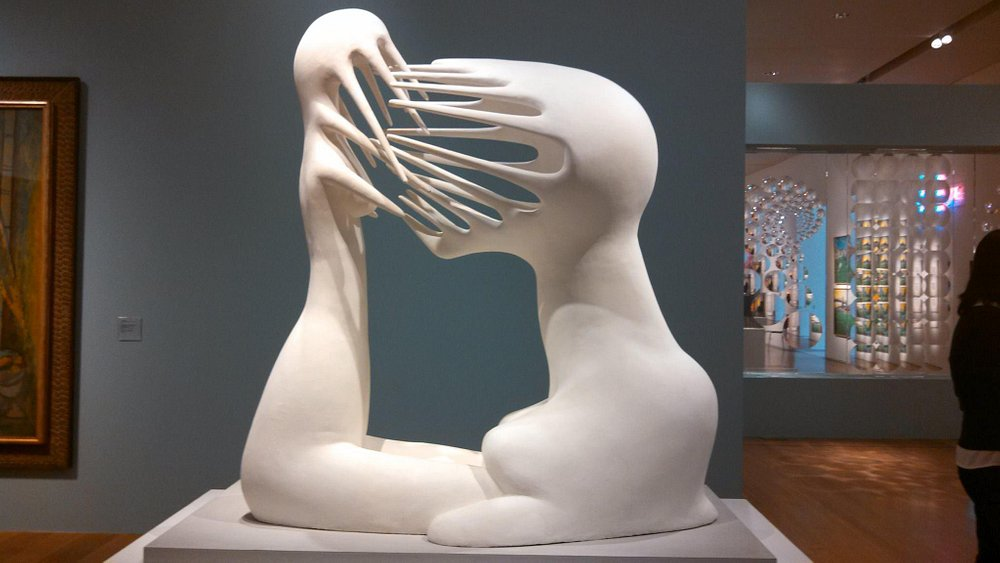
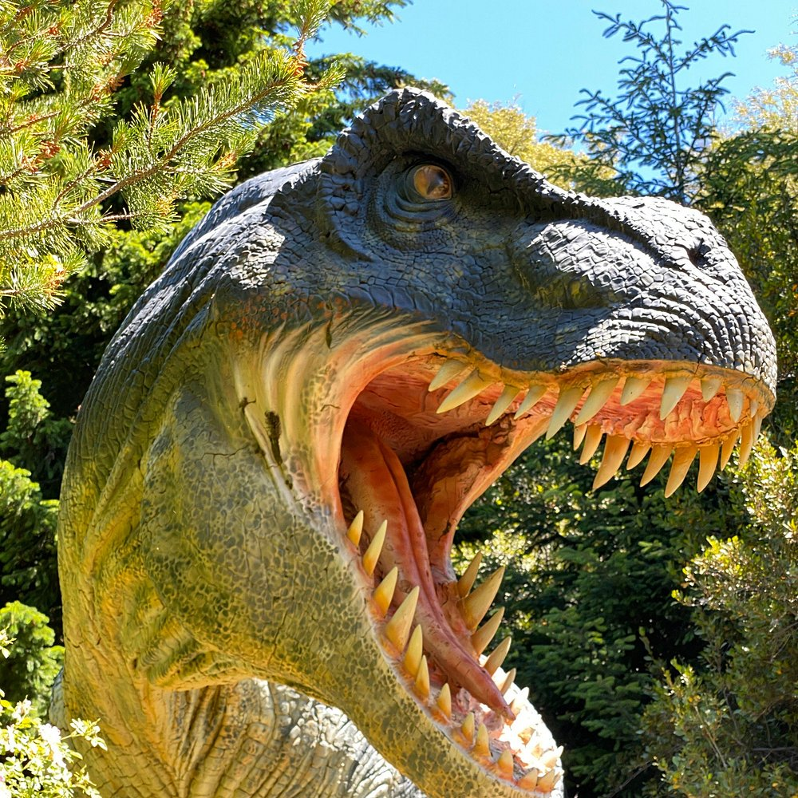
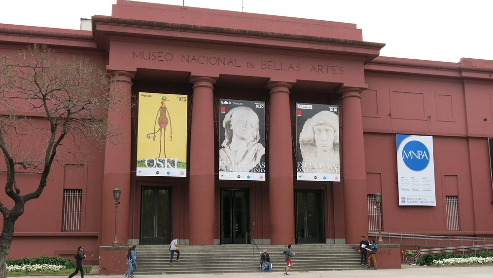
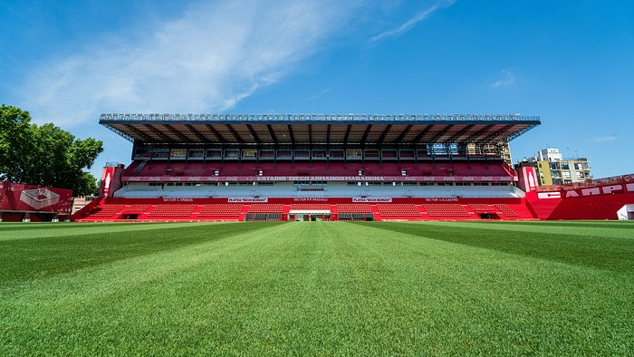

Mejores museos de Argentina
Argentina cuenta con una rica y diversa oferta cultural, y sus museos son un reflejo vibrante de su historia, arte, ciencia y patrimonio.
Desde espacios dedicados al arte clásico y contemporáneo hasta museos de historia natural, ciencia, tecnología y memoria, cada uno ofrece una experiencia única para descubrir, aprender y disfrutar.
En esta selección reunimos algunos de los museos más destacados del país, ubicados en distintas regiones y ciudades, que invitan a sumergirse en el pasado, explorar el presente y proyectar el futuro a través del conocimiento y la creatividad.
Ya seas turista, estudiante o amante del arte y la cultura, acá vas a encontrar propuestas para todos los gustos.
Museo de Arte Latinoamericano de Buenos Aires (MALBA)
El MALBA es uno de los espacios culturales más destacados de América Latina, dedicado a la preservación, difusión y puesta en valor del arte moderno y contemporáneo de la región. Inaugurado en 2001, el museo alberga una de las colecciones más importantes de arte
latinoamericano del siglo XX, con obras de grandes artistas como Frida Kahlo, Diego Rivera, Tarsila do Amaral, Xul Solar, Antonio Berni y muchos más.
Además de su colección permanente, el MALBA ofrece exposiciones temporales de artistas nacionales e internacionales,
ciclos de cine, conferencias, talleres y actividades educativas que promueven el diálogo entre el arte, la historia y la sociedad actual.
Ubicado en el corazón del barrio de Palermo, en Buenos Aires, el MALBA es un punto de encuentro para amantes del arte, estudiantes, turistas
y público en general. Su arquitectura moderna y su propuesta innovadora lo convierten en un ícono cultural imperdible de la ciudad. Para mas informacion Click aqui

Parque Nahuelito (Bariloche, Río Negro)
Ubicado en un entorno natural increíble a pocos minutos del centro de Bariloche, el Parque Nahuelito es una propuesta única que combina paleontología, aventura y diversión para todas las edades.
Inspirado en el mítico "Nahuelito" —la criatura legendaria del lago Nahuel Huapi—, el parque ofrece un recorrido al aire libre entre réplicas a escala real de dinosaurios y otras criaturas prehistóricas,
acompañadas por guías especializados que brindan información científica y curiosidades.
Más que un museo tradicional, Nahuelito es una experiencia educativa e interactiva en contacto con la naturaleza, ideal para familias, grupos escolares y amantes de la historia natural.
Su enfoque didáctico y entretenido lo convierte en una parada imperdible para quienes visitan la Patagonia argentina. Para mas informacion Click aqui

Museo Nacional de Bellas Artes (Buenos Aires)
El Museo Nacional de Bellas Artes (MNBA) es uno de los museos más importantes de América Latina y un verdadero ícono cultural de la Argentina.
Ubicado en el barrio porteño de Recoleta, alberga una de las colecciones de arte más completas del país, con obras de grandes maestros internacionales como Goya, Rembrandt, Van Gogh, Monet y Rodin,
junto a destacados artistas argentinos como Prilidiano Pueyrredón, Berni, Quinquela Martín y Xul Solar.
Con entrada gratuita y una propuesta accesible para todo el público, el MNBA ofrece además exposiciones temporales, visitas guiadas, actividades educativas y una biblioteca especializada.
Su imponente edificio y su valioso patrimonio artístico lo convierten en una visita obligada para quienes quieren conectar con la historia del arte en un solo lugar. Para mas informacion Click aqui

MAAM – Museo de Arqueología de Alta Montaña (Salta)
Ubicado en el corazón de la ciudad de Salta, el MAAM es uno de los museos arqueológicos más impactantes de América Latina. Su principal atractivo son los Niños del Llullaillaco, tres cuerpos momificados de niños incas hallados en la cima del volcán Llullaillaco a más de 6.700 metros de altura, en un estado de conservación asombroso.
Estos hallazgos permiten conocer con profundidad las creencias, rituales y modos de vida de las antiguas culturas andinas.
El museo ofrece una experiencia conmovedora y respetuosa, con un enfoque científico y cultural que busca preservar y transmitir el legado ancestral de los pueblos originarios.
A través de objetos ceremoniales, material audiovisual y explicaciones detalladas, el MAAM invita a reflexionar sobre la historia, la espiritualidad y la conexión entre el ser humano y la montaña. Para mas informacion Click aqui

Museo - Estadio Diego Armando Maradona (Buenos Aires)
Ubicado en el mítico estadio del club Argentinos Juniors, en el barrio porteño de La Paternal, el Museo - Estadio Diego Armando Maradona rinde homenaje al inicio de la leyenda del fútbol argentino.
En este lugar nació futbolísticamente Diego, y el museo ofrece un recorrido emotivo por su historia, desde sus primeros pasos en las divisiones inferiores hasta su consagración como ídolo mundial.
El espacio combina objetos personales, camisetas, fotos inéditas, videos y recuerdos que retratan no solo la carrera de Maradona, sino también su impacto cultural y social.
Además, se puede visitar el estadio donde debutó con solo 15 años, cargado de historia y pasión. Para fanáticos del fútbol, turistas y admiradores del "10", este museo es una parada obligada y
una experiencia cargada de emoción y orgullo argentino. Para mas informacion Click aqui
